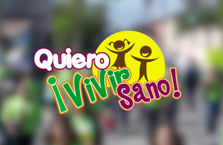

Centro de influencia.
Duración:
40 horas
Dirigido a:
Publico general interesado en emprender el proyecto de apoyo a la comunidad a través de un centro de influencia.
Costo:
$1,500.00
InscríbeteDisponible a partir del enero de 2015
Descripción del curso
Este curso ofrece contenido teórico práctico sobre el proceso para crear un centro de influencia que ofrezca apoyo básico y ayuda para lograr un avance en la calidad de vida de la población objetivo.
Objetivos
- Reconocer la necesidad de seguir el método de Jesús “atención de necesidades” como estrategia evangelista.
- Entender el concepto de centros de influencia y su aporte como estrategia de evangelización en zonas urbanas.
- Identificar los diferentes tipos de centros de influencia que se pueden establecer, analizar el proceso para desarrollarlos a partir de conceptos ya creados.
- Conocer la operación de centro de influencia a través del estudio de casos.
- Analizar estrategias propuestas para presentar el evangelio en diferentes centros de influencia y descubrir oportunidades de nuevas formas.
- Estudiar herramientas básicas de marketing para aplicar en un centro de influencia.
Contenido temático
Módulos
No. |
Temas |
Objetivos |
Horas |
1 |
Tema 1: Centros de influencia |
||
|
|
8 | |
2 |
Tema 2: Estrategias para desarrollar Centros de influencia. |
||
|
|
12 | |
3 |
Tema 3: Conexión del centro de influencia con la predicación del evangelio |
||
|
|
10 | |
4 |
4 Tema 4: Marketing y emprendimiento de centros de influencia. |
||
|
|
10 | |
|
Total de Horas |
40 | ||
Descargar PDF
Otros Cursos
-
Sexualidad
-
Promoción de Estilos de Vida Saludable
-

8 hábitos saludables
-

Estilo de vida saludable
-
Salud mental y bienestar personal
-
Salud espiritual Jesús la gran esperanza
-
Formación de promotores de salud y evangelismo
-
Estrategias de implementación del programa QVS en Instituciones educativas
-
Activación física para el bienestar personal